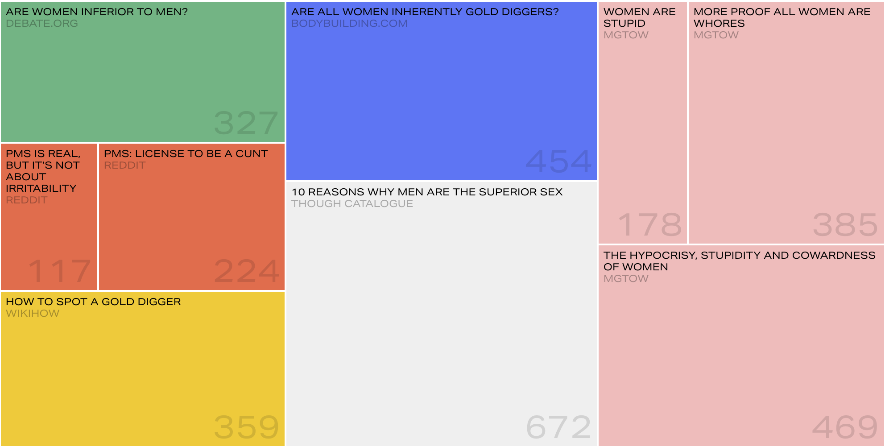
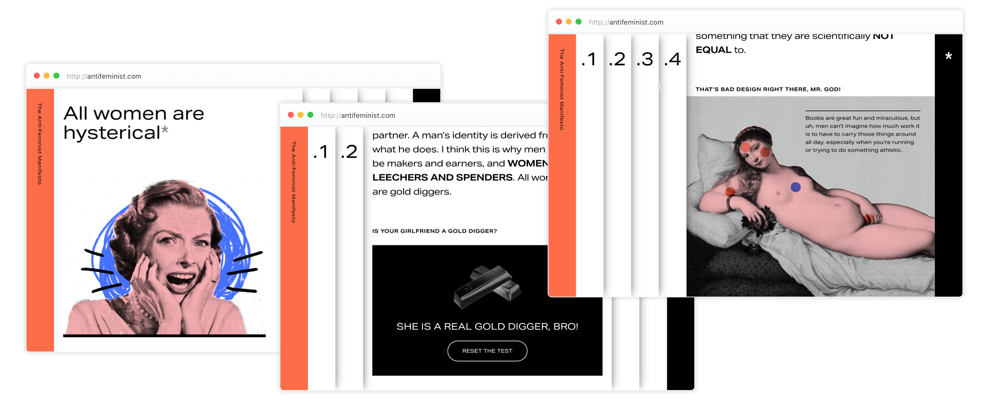

The Anti·Feminist Manifesto was born as part of the Final Synthesis Lab final project at Politecnico di Milano. The Lab, held by the Density Design research department, aims to analyze and engage the public about complex and controversial social issues through the analysis of data contents. The contents are absurd but, at the same time unique, so their job is to take the user through the path defined by the five statements and create a sense of alienation and astonishment. Each statement summarizes the best of the comments online and it is proposed with the same repeated formula to represents a sort of collection of commandments, the statements represent the main arguments used by anti-feminist public.
Visit website
The research
The Anti•feminist Manifesto was designed during the third phase of a bigger project on sexism as a form of hate speech online. During the previous phases, we initially analyzed existing documentation online, then we scraped the web looking for more data to work on. The output of those two research converged in two different websites: Ordinary sexism and Do we still need feminism. Starting from a large research, we decided to focus on small online communities and their vision of female’s activism, working mainly with the data mined from Reddit. In particular, the website focus on terminological choices and on the vocabulary created; the fact that this kind of content, hyperbolic and without any logic, is really made by some people, creates a sense of dissociation and at the same time gives an unseen perspective on what anti-feminists means. A tree-map visualization can help to better understand where the content comes from, for each website the treemap visualizes the number of characters selected for the text. We used 3185 characters for the whole website.The website speaks mainly to users that don’t know much about feminism or even to the ones that identify themselves as anti-feminist, not understanding the cultural background they are associating themselves to. We also think is important to reach those people who think that equality has been achieved, not considering the importance of feminism and its principles.
The project
The website has a horizontal structure that gradually shows the power and the gravity of hate speech, going from the normalized forms of sexism to the most serious and brutal words used to discredit women. Each chapter is enriched by a highly ironical visualization that at first make theuesr laugh but in the end they’re more and more hyperbolic and non-sense. Indeed, the project aims to bring awareness to this topic and sensitize the visitors, underlining the importance of being feminist in an era where is easy to share harmful and offensive content. Just in the final page the user discover that all the content was based on real phrases found online, creating a sense of alienation. The launching campaign of the project consists in a series of provocative posters in which the pillars of the anti-feminist’s believe are postulated. No further clues are given the reaction should be astonishment and disdain; the provocative effect should be maximized by the absence of an explicative payoff and push the reader to scan the QR code.
